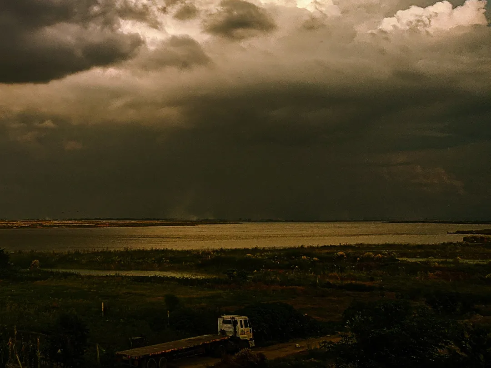
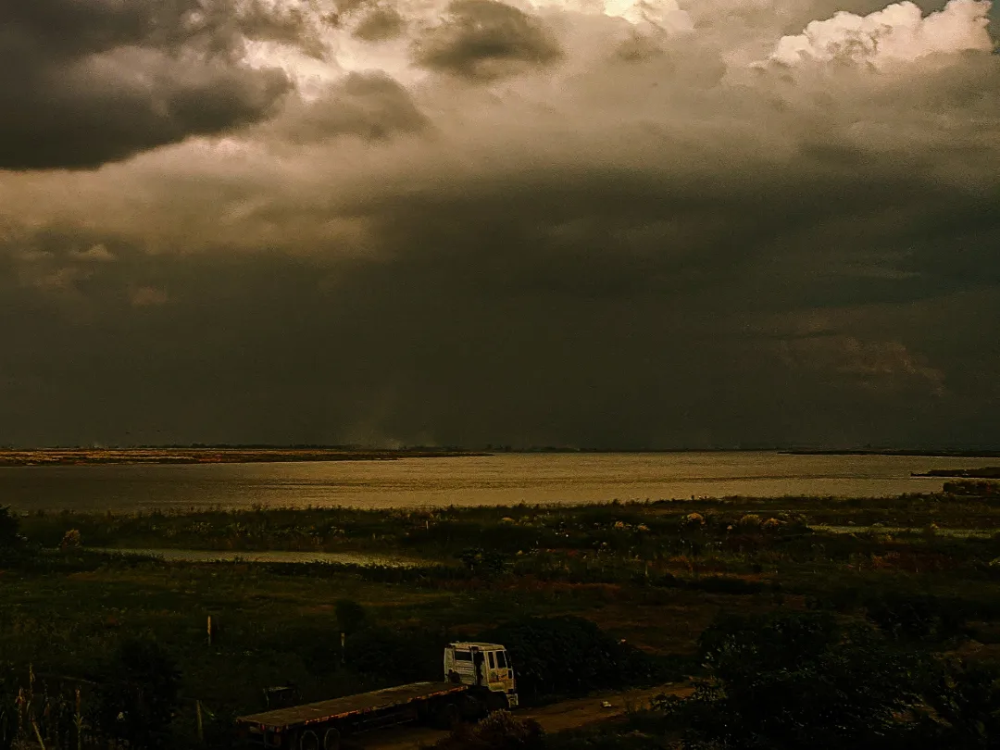

pre$ent
photography
ptfo
device
let's see
redmi note 9
Main Camera: 48 MP, f/1.8, 26mm (wide), PDAF. This high-resolution sensor is designed to capture detailed and vibrant images. Ultra-Wide Camera: 8 MP, f/2.2, 118˚. This lens allows you to capture more of the scene in a single shot, making it ideal for landscapes and group photos. Macro Camera: 2 MP, f/2.4. This lens is used for close-up shots, allowing you to capture fine details of small subjects. Depth Sensor: 2 MP, f/2.4. This sensor helps in achieving a bokeh effect in portrait shots by blurring the background and keeping the subject in focus.

 
